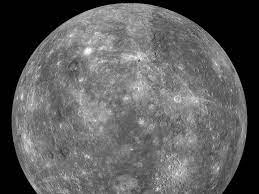
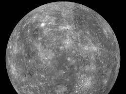

The Universe
The universe (Latin: universus) is all of space and time and their contents, including planets, stars, galaxies, and all other forms of matter and energy. The Big Bang theory is the prevailing cosmological description of the development of the universe. According to this theory, space and time emerged together 13.787±0.020 billion years ago, and the universe has been expanding ever since. While the spatial size of the entire universe is unknown, the cosmic inflation equation indicates that it must have a minimum diameter of 23 trillion light years, and it is possible to measure the size of the observable universe, which is approximately 93 billion light-years in diameter at the present day.Click here to know more about the universe
Note:Click On The Planets to Know More....It will directly take you to the perticular object section
 



THE SUN
Sun, star around which Earth and the other components of the solar system revolve. It is the dominant body of the system, constituting more than 99 percent of its entire mass. The Sun is the source of an enormous amount of energy, a portion of which provides Earth with the light and heat necessary to support life.The Sun is classified as a G2 V star, with G2 standing for the second hottest stars of the yellow G class—of surface temperature about 5,800 kelvins (K)—and the V representing a main sequence, or dwarf, star, the typical star for this temperature class. (G stars are so called because of the prominence of a band of atomic and molecular spectral lines that the German physicist Joseph von Fraunhofer designated G.) The Sun exists in the outer part of the Milky Way Galaxy and was formed from material that had been processed inside a supernova. The Sun is not, as is often said, a small star. Although it falls midway between the biggest and smallest stars of its type, there are so many dwarf stars that the Sun falls in the top 5 percent of stars in the neighbourhood that immediately surrounds it.The radius of the Sun, R☉, is 109 times that of Earth, but its distance from Earth is 215 R☉, so it subtends an angle of only 1/2° in the sky, roughly the same as that of the Moon. By comparison, Proxima Centauri, the next closest star to Earth, is 250,000 times farther away, and its relative apparent brightness is reduced by the square of that ratio, or 62 billion times. The temperature of the Sun’s surface is so high that no solid or liquid can exist there; the constituent materials are predominantly gaseous atoms, with a very small number of molecules. As a result, there is no fixed surface. The surface viewed from Earth, called the photosphere, is the layer from which most of the radiation reaches us; the radiation from below is absorbed and reradiated, and the emission from overlying layers drops sharply, by about a factor of six every 200 kilometres (124 miles). The Sun is so far from Earth that this slightly fuzzy surface cannot be resolved, and so the limb (the visible edge) appears sharp.
MERCURY
Mercury is the smallest planet in the Solar System and the closest to the Sun. Its orbit around the Sun takes 87.97 Earth days, the shortest of all the Sun's planets. It is named after the Roman god Mercurius (Mercury), god of commerce, messenger of the gods, and mediator between gods and mortals, corresponding to the Greek god Hermes (Ἑρμῆς). Like Venus, Mercury orbits the Sun within Earth's orbit as an inferior planet, and its apparent distance from the Sun as viewed from Earth never exceeds 28°. This proximity to the Sun means the planet can only be seen near the western horizon after sunset or the eastern horizon before sunrise, usually in twilight. At this time, it may appear as a bright star-like object, but is more difficult to observe than Venus. From Earth, the planet telescopically displays the complete range of phases, similar to Venus and the Moon, which recurs over its synodic period of approximately 116 days. Mercury rotates in a way that is unique in the Solar System. It is tidally locked with the Sun in a 3:2 spin–orbit resonance,[17] meaning that relative to the fixed stars, it rotates on its axis exactly three times for every two revolutions it makes around the Sun.[a][18] As seen from the Sun, in a frame of reference that rotates with the orbital motion, it appears to rotate only once every two Mercurian years. An observer on Mercury would therefore see only one day every two Mercurian years. Mercury's axis has the smallest tilt of any of the Solar System's planets (about 1⁄30 degree). Its orbital eccentricity is the largest of all known planets in the Solar System;[b] at perihelion, Mercury's distance from the Sun is only about two-thirds (or 66%) of its distance at aphelion. Mercury's surface appears heavily cratered and is similar in appearance to the Moon's, indicating that it has been geologically inactive for billions of years. Having almost no atmosphere to retain heat, it has surface temperatures that vary diurnally more than on any other planet in the Solar System, ranging from 100 K at night to 700 K (427 °C; 800 °F) during the day across the equatorial regions.[19] The polar regions are constantly below 180 K (−93 °C; −136 °F). The planet has no known natural satellites.
VENUS
Venus is the second planet from the Sun. It is named after the Roman goddess of love and beauty. As the brightest natural object in Earth's night sky after the Moon, Venus can cast shadows and can be visible to the naked eye in broad daylight.[18][19] Venus lies within Earth's orbit, and so never appears to venture far from the Sun, either setting in the west just after dusk or rising in the east a little while before dawn. Venus orbits the Sun every 224.7 Earth days.[20] It has a synodic day length of 117 Earth days and a sidereal rotation period of 243 Earth days. As a consequence, it takes longer to rotate about its axis than any other planet in the Solar System, and does so in the opposite direction to all but Uranus. This means the Sun rises in the west and sets in the east.[21] Venus does not have any moons, a distinction it shares only with Mercury among the planets in the Solar System.[22] Venus is a terrestrial planet and is sometimes called Earth's "sister planet" because of their similar size, mass, proximity to the Sun, and bulk composition. It is radically different from Earth in other respects. It has the densest atmosphere of the four terrestrial planets, consisting of more than 96% carbon dioxide. The atmospheric pressure at the planet's surface is about 92 times the sea level pressure of Earth, or roughly the pressure at 900 m (3,000 ft) underwater on Earth. Even though Mercury is closer to the Sun, Venus has the hottest surface of any planet in the Solar System, with a mean temperature of 737 K (464 °C; 867 °F). Venus is shrouded by an opaque layer of highly reflective clouds of sulfuric acid, preventing its surface from being seen from space in light. It may have had water oceans in the past,[23][24] but these would have vaporized as the temperature rose under a runaway greenhouse effect.[25] The water has probably photodissociated, and the free hydrogen has been swept into interplanetary space by the solar wind because of the lack of a planetary magnetic field.[26] As one of the brightest objects in the sky, Venus has been a major fixture in human culture for as long as records have existed. It has been made sacred to gods of many cultures, and has been a prime inspiration for writers and poets as the "morning star" and "evening star". Venus was the first planet to have its motions plotted across the sky, as early as the second millennium BC.[27] Its proximity to Earth has made Venus a prime target for early interplanetary exploration. It was the first planet beyond Earth visited by a spacecraft (Venera 1 in 1961), and the first to be successfully landed on (by Venera 7 in 1970). Venusian thick clouds render observation of its surface impossible in visible spectrum, and the first detailed maps did not emerge until the arrival of the Magellan orbiter in 1991. Plans have been proposed for rovers or more complex missions, but they are hindered by Venus's hostile surface conditions. The possibility of life on Venus has long been a topic of speculation, and in recent years has received active research.
EARTH
Earth is the third planet from the Sun and the only astronomical object known to harbor life. While large amounts of water can be found throughout the Solar System, only Earth sustains liquid surface water. About 71% of Earth's surface is made up of the ocean, dwarfing Earth's polar ice, lakes and rivers. The remaining 29% of Earth's surface is land, consisting of continents and islands. Earth's surface layer is formed of several slowly moving tectonic plates, interacting to produce mountain ranges, volcanoes and earthquakes. Earth's liquid outer core generates the magnetic field that shapes Earth's magnetosphere, deflecting destructive solar winds. Earth's atmosphere consists mostly of nitrogen and oxygen. More solar energy is received by tropical regions than polar regions and is redistributed by atmospheric and ocean circulation. Water vapor is widely present in the atmosphere and forms clouds that cover most of the planet. Greenhouse gases in the atmosphere like carbon dioxide (CO2) trap a part of the energy from the Sun close to the surface. A region's climate is governed by latitude, but also by elevation and proximity to moderating oceans. Severe weather, such as tropical cyclones, thunderstorms, and heatwaves, occurs in most areas and greatly impacts life.
MARS
Mars is the fourth planet from the Sun and the second-smallest planet in the Solar System, being larger than only Mercury. In English, Mars carries the name of the Roman god of war and is often referred to as the "Red Planet".[17][18] The latter refers to the effect of the iron oxide prevalent on Mars's surface, which gives it a reddish appearance, that is distinctive among the astronomical bodies visible to the naked eye.[19] Mars is a terrestrial planet with a thin atmosphere, with surface features reminiscent of the impact craters of the Moon, and the valleys, deserts and polar ice caps of Earth. The days and seasons are comparable to those of Earth, because the rotation period as well as the tilt of the rotational axis relative to the ecliptic plane are similar. Mars is the site of Olympus Mons, the largest volcano and highest known mountain on any planet in the Solar System, and of Valles Marineris, one of the largest canyons in the Solar System. The smooth Borealis basin in the Northern Hemisphere covers 40% of the planet and may be a giant impact feature.[20] Mars has two moons, Phobos and Deimos, which are small and irregularly shaped.
JUPITER
Jupiter is the fifth planet from the Sun and the largest in the Solar System. It is a gas giant with a mass more than two and a half times that of all the other planets in the Solar System combined, but slightly less than one-thousandth the mass of the Sun. Jupiter is the third brightest natural object in the Earth's night sky after the Moon and Venus. People have been observing it since prehistoric times; it was named after the Roman god Jupiter, the king of the gods, because of its observed size. Jupiter is primarily composed of hydrogen, but helium constitutes one-quarter of its mass and one-tenth of its volume. It likely has a rocky core of heavier elements,[16] but, like the other giant planets, Jupiter lacks a well-defined solid surface. The ongoing contraction of its interior generates heat greater than the amount received from the Sun. Because of its rapid rotation, the planet's shape is an oblate spheroid; it has a slight but noticeable bulge around the equator. The outer atmosphere is visibly segregated into several bands at different latitudes, with turbulence and storms along their interacting boundaries. A prominent result of this is the Great Red Spot, a giant storm known to have existed since at least the 17th century when telescopes first saw it.
SATURN
Saturn is the sixth planet from the Sun and the second-largest in the Solar System, after Jupiter. It is a gas giant with an average radius of about nine and a half times that of Earth.[22][23] It only has one-eighth the average density of Earth; however, with its larger volume, Saturn is over 95 times more massive.[24][25][26] Saturn's interior is most likely composed of a core of iron–nickel and rock (silicon and oxygen compounds). Its core is surrounded by a deep layer of metallic hydrogen, an intermediate layer of liquid hydrogen and liquid helium, and finally, a gaseous outer layer. Saturn has a pale yellow hue due to ammonia crystals in its upper atmosphere. An electrical current within the metallic hydrogen layer is thought to give rise to Saturn's planetary magnetic field, which is weaker than Earth's, but which has a magnetic moment 580 times that of Earth due to Saturn's larger size. Saturn's magnetic field strength is around one-twentieth of Jupiter's.[27] The outer atmosphere is generally bland and lacking in contrast, although long-lived features can appear. Wind speeds on Saturn can reach 1,800 km/h (1,100 mph; 500 m/s), higher than on Jupiter but not as high as on Neptune.[28]
URANUS
Uranus is the seventh planet from the Sun. Its name is a reference to the Greek god of the sky, Uranus, who, according to Greek mythology, was the great-grandfather of Ares (Mars), grandfather of Zeus (Jupiter) and father of Cronus (Saturn). It has the third-largest planetary radius and fourth-largest planetary mass in the Solar System. Uranus is similar in composition to Neptune, and both have bulk chemical compositions which differ from that of the larger gas giants Jupiter and Saturn. For this reason, scientists often classify Uranus and Neptune as "ice giants" to distinguish them from the other giant planets. As with gas giants, ice giants also lack a well defined "solid surface." Uranus's atmosphere is similar to Jupiter's and Saturn's in its primary composition of hydrogen and helium, but it contains more "ices" such as water, ammonia, and methane, along with traces of other hydrocarbons.[17] It has the coldest planetary atmosphere in the Solar System, with a minimum temperature of 49 K (−224 °C; −371 °F), and has a complex, layered cloud structure with water thought to make up the lowest clouds and methane the uppermost layer of clouds.[17] The interior of Uranus is mainly composed of ices and rock.[16]
NEPTUNE
Neptune is the eighth and farthest-known Solar planet from the Sun. In the Solar System, it is the fourth-largest planet by diameter, the third-most-massive planet, and the densest giant planet. It is 17 times the mass of Earth, slightly more massive than its near-twin Uranus. Neptune is denser and physically smaller than Uranus because its greater mass causes more gravitational compression of its atmosphere. It is referred to as one of the solar system's two ice giant planets (the other one being its near-twin Uranus.) Being composed primarily of gases and liquids, it has no well-defined "solid surface." The planet orbits the Sun once every 164.8 years at an average distance of 30.1 AU (4.5 billion km; 2.8 billion mi). It is named after the Roman god of the sea and has the astronomical symbol ♆, representing Neptune's trident. A second symbol, an L-V monogram ⯉ for 'Le Verrier', analogous to the H monogram ♅ for Uranus, was never much used outside of France and is now archaic.